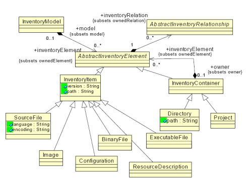
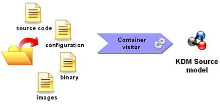
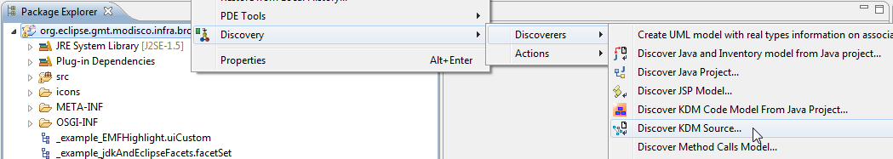
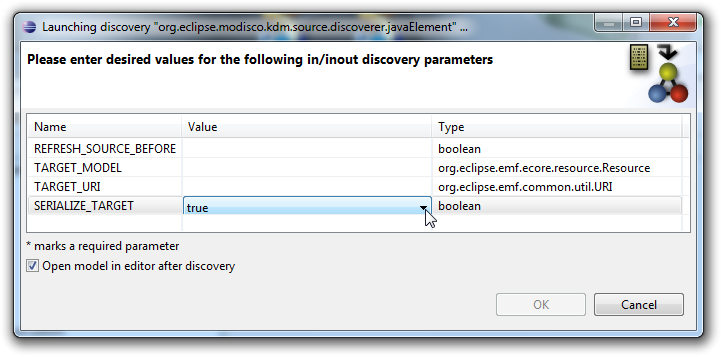
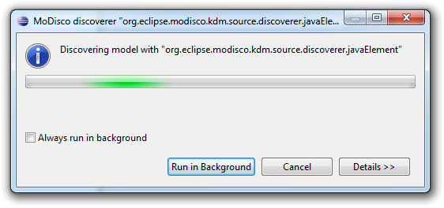
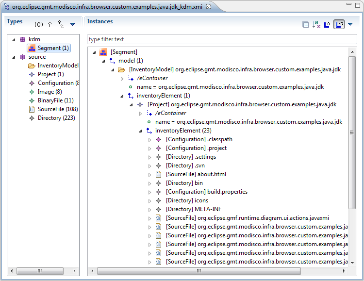
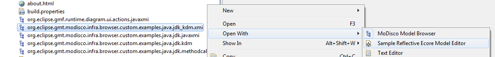

The goal of the KDM Source Discoverer plug-in is to allow practical extractions of KDM Source models from the file hierarchy of an application.
Quality disclaimer: this KDM Source discoverer has good test coverage compared to the complexity of the discovery process.
This plug-in aims at analyzing the file system hierarchy of an application and providing a model describing the information found, conforming to the KDM Source sub package:

The Source package defines a set of meta-model elements whose purpose is to represent the physical artifacts of the existing system, such as source files, images, configuration files, resource descriptions, etc.

For an input folder, the KDM source discoverer visits each folder and file. For each file, it creates the appropriate sub-class of InventoryItem using the Resources content type API. This plugin defines its own content types to properly classify file types.
Right-click on a project in the Eclipse Package Explorer view and choose Discovery > Discoverers > Discover KDM Source... to create the KDM Source model of your application:

A discovery parameters dialog opens to let you specify the parameters of the discovery:

Once launched, a progress dialog will appear as soon as the operation begins:

At the end of the process, the newly created model file is added to the root of your project if you set SERIALIZE_TARGET to true, and the model is opened in the default model browser if you selected Open model in editor after discovery:

The KDM XMI files (with a filename ending in "_kdm.xmi" by convention) can be opened in any model browser:
